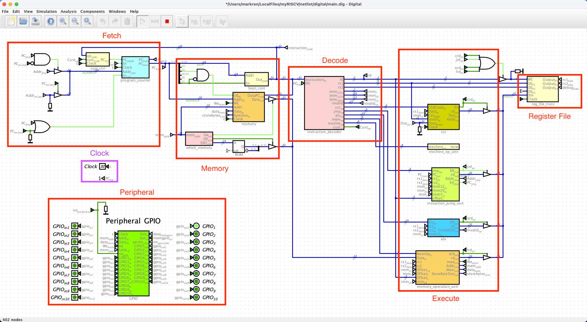
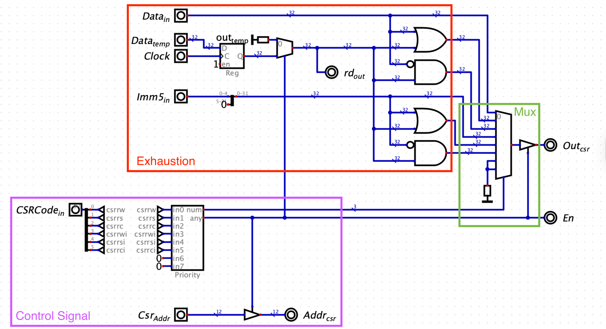
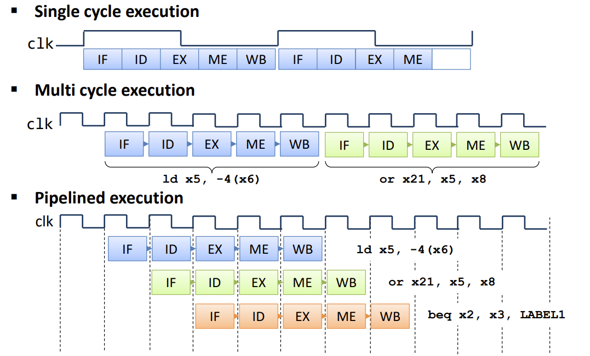

CPU 原理速成
Change of Mind
- 对于有时钟的电路, 我们应该想象成: 电路的状态只在时钟的上升沿「瞬间」变化. 时钟的上升沿发生时电路做了两件事情:
- 前一个时钟周期的计算结果该锁存的 锁存到寄存器 中.
- 下一个时钟周期的结果瞬间计算出来并 放在线上 (他们目前还不能被 CPU “看到”).
CPU 是如何成为现在这个样子的?
The following is a critical path towards understanding CPU. You can’t drop any of them. 以下是理解 CPU 的必经之路.
分而治之, 穷举 + 控制信号
分而治之: 一条指令的执行可以拆分为这几个阶段 (phase):
IF (Instruction Fetch): 取指.
ID (Instruction Decode): 译码.
- ID 后面有些地方 [1] 后面还细分了 Evaluate Address 和 Fetch Operands.
EX (Execute): 执行.
ME (Memory Access): 访存.
WB (Write Back): 写回.
每个 phase 都可以有固定的输入和输出, 所以每个 phase 都对应一个 (或多个) 电路模块.

这个 phase 的 CPU 可以通过我的 my-riscv 项目 可视化地理解
Arithmetic 运算: 读取某些寄存器的值, 运算之后再放回某个寄存器中 (不能读写内存)
Load/Store 访存: 唯一能访问内存的指令. 将某个寄存器的值写到某个内存地址 (或者反过来)
Control 控制流: 跳转 (其实就是改变 pc 寄存器的值 (还有顺带改变一下 ra 寄存器))
穷举 + 控制信号 思想: 每个电路模块用硬件写死, 以 ALU 单元 (Execute 的其中一个模块) 为例, 所有可能的输出都计算出来 (说是计算, 其实就是一个数字电路通了而已, 电路通了结果自然就在输出端口显示出来了, 没有「计算」的过程. 比如 ALU), 只不过在输出之前用控制信号来决定哪个计算结果才是我们要的 (一般控制信号都由 Decoder 产生, 因为 Decoder 的作用就是 (根据 Opcode) 将一条指令解读为如何控制各个模块应该输出什么结果).

穷举 + 控制信号 思想在 ALU 内部的体现 一条指令的执行的那几个 phase 可以设计成:
Single-Cycle: 在一个时钟周期内完成所有 phases. 由于电路有延迟, 所有 phase 的电路很长, 要求时钟频率不能很高.
Multi-Cycle: 每个时钟周期只执行一个 phase.
Figure 1: 为了提升指令执行效率引入了 Pipeline [2]
这样的 CPU: simple, general, 但是 not efficient!
流水线
Pipeline 流水线: 见 Figure fig-single-mult-pipelined.
在每两个 phase 之间插入一些受始终控制的寄存器:
- IF-ID 之间: 当前指令, PC 值 (
jal要用) - ID-EX 之间: 指令类型, rs1, rs2, rd, imm.
- IF-ID 之间: 当前指令, PC 值 (
第三阶段
总线: ARM 公司研发了很多总线, 他们的集合称为 AMBA (Advanced Microcontroller Bus Architecture). 包括: APB, AHB, AXI. Xilinx 公司很多异构的 FPGA都需要引入 AXI 总线.
AXI 特点:
- 面向存储: 指主、从机在读到数据之后一般都会将这些数据先放在某种储存里面.
- 突发总线:
Cache
Memory
内存: working memory, main memory
DRAM & SSD 内存与硬盘
- 读写速度 (3000 倍): 17 ns vs 50 ms, 超音速飞机和龟速
- 容量: 16GB vs 4TB
SIMM & DIMM
- DIMM (Dual In-line Memory Module)
Macros 宏
xlen = 32: Word length 字长, 即 GPR 寄存器宽度 (由于通用寄存器被命名为 x0~x31)